ID: deer-train-n02439398_6441/felzenszwalb_masked_softmax
Accuracy: 0.687 -> 0.688
Mean Recall: 0.687 -> 0.688
Mean Precision: 0.692 -> 0.693
Mean F1: 0.684 -> 0.685
Target Recall: 0.61 -> 0.642
Target Precision: 0.6 -> 0.566
Target F1: 0.605 -> 0.601
Orig Pred Recall: 0.877 -> 0.864
Orig Pred Precision: 0.68 -> 0.714
Orig Pred F1: 0.766 -> 0.782
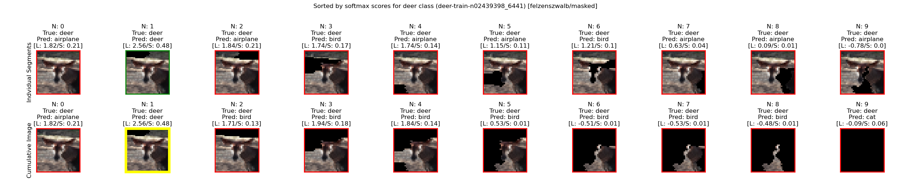 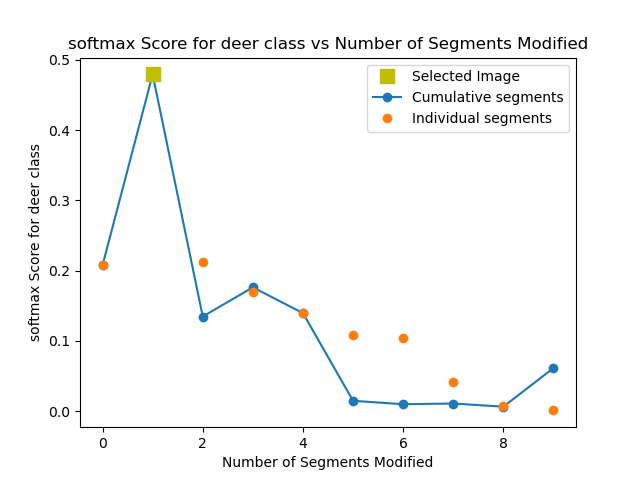 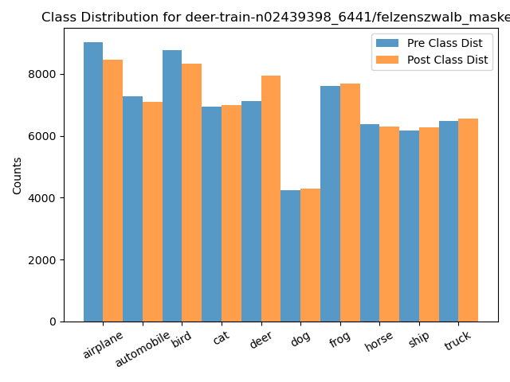ID: deer-train-n02432291_6604/felzenszwalb_masked_softmax
Accuracy: 0.687 -> 0.687
Mean Recall: 0.687 -> 0.687
Mean Precision: 0.692 -> 0.694
Mean F1: 0.684 -> 0.685
Target Recall: 0.61 -> 0.679
Target Precision: 0.6 -> 0.528
Target F1: 0.605 -> 0.594
Orig Pred Recall: 0.877 -> 0.844
Orig Pred Precision: 0.68 -> 0.751
Orig Pred F1: 0.766 -> 0.795
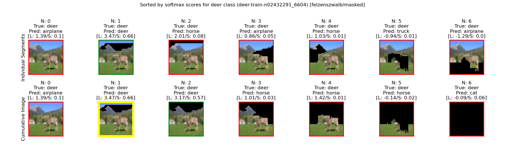 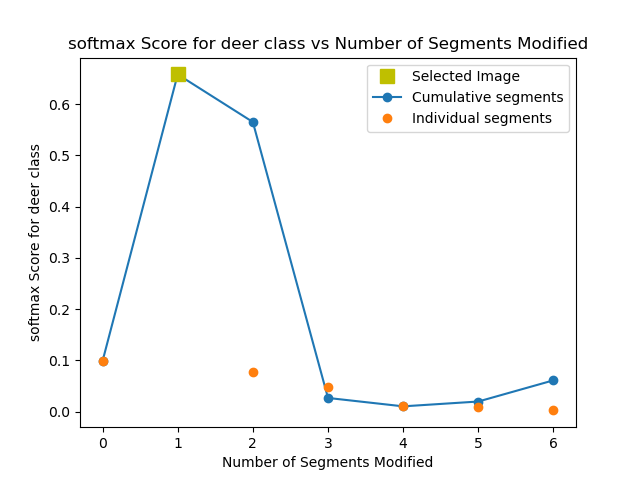 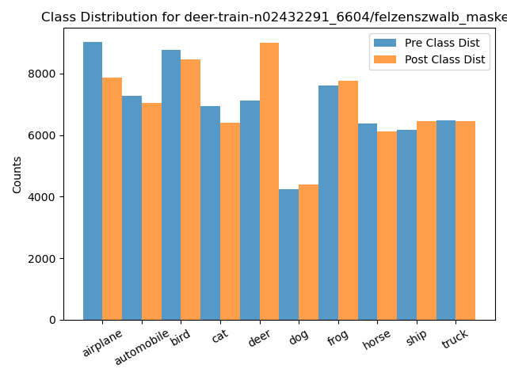ID: deer-train-n02432511_7886/felzenszwalb_gaussian_softmax
Accuracy: 0.687 -> 0.687
Mean Recall: 0.687 -> 0.687
Mean Precision: 0.692 -> 0.694
Mean F1: 0.684 -> 0.684
Target Recall: 0.61 -> 0.625
Target Precision: 0.6 -> 0.577
Target F1: 0.605 -> 0.6
Orig Pred Recall: 0.808 -> 0.78
Orig Pred Precision: 0.744 -> 0.788
Orig Pred F1: 0.775 -> 0.784
 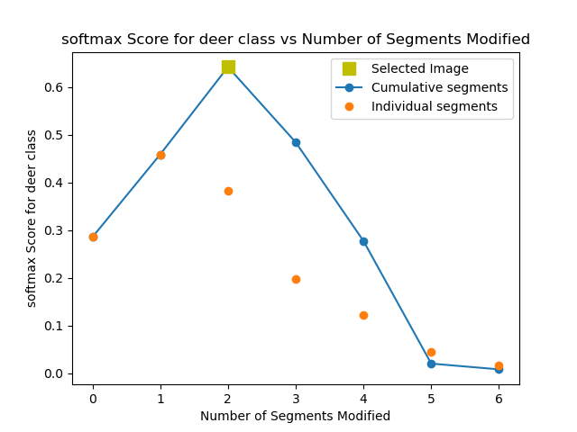
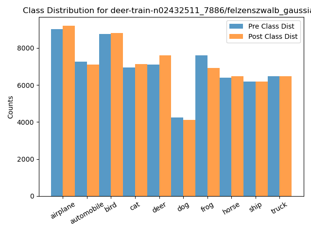
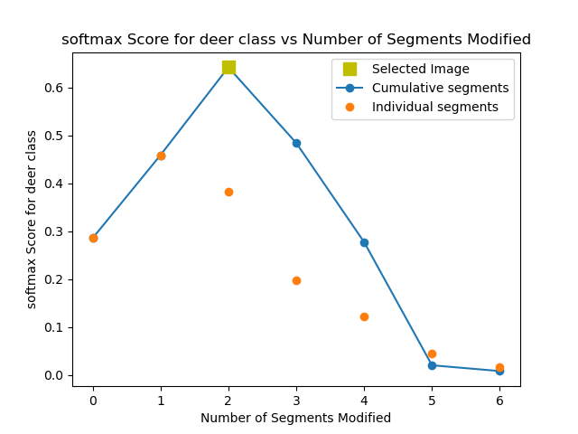
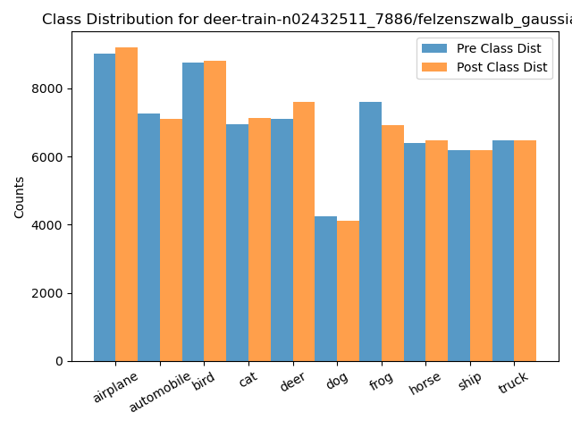
ID: deer-train-n02432291_24374/felzenszwalb_gaussian_softmax
Accuracy: 0.687 -> 0.685
Mean Recall: 0.687 -> 0.685
Mean Precision: 0.692 -> 0.695
Mean F1: 0.684 -> 0.682
Target Recall: 0.61 -> 0.682
Target Precision: 0.6 -> 0.526
Target F1: 0.605 -> 0.594
Orig Pred Recall: 0.743 -> 0.61
Orig Pred Precision: 0.594 -> 0.76
Orig Pred F1: 0.66 -> 0.677
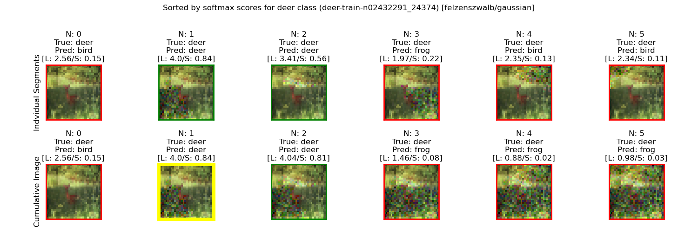 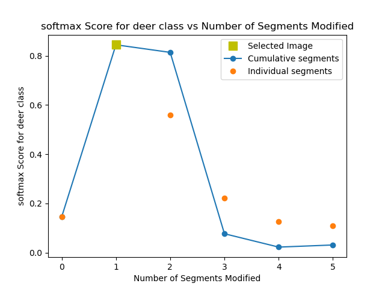 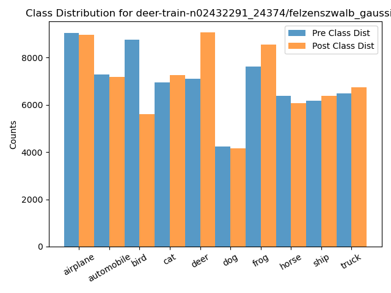ID: deer-train-n02410509_2583/felzenszwalb_masked_softmax
Accuracy: 0.687 -> 0.685
Mean Recall: 0.687 -> 0.685
Mean Precision: 0.692 -> 0.69
Mean F1: 0.684 -> 0.681
Target Recall: 0.61 -> 0.668
Target Precision: 0.6 -> 0.539
Target F1: 0.605 -> 0.597
Orig Pred Recall: 0.734 -> 0.701
Orig Pred Precision: 0.804 -> 0.828
Orig Pred F1: 0.767 -> 0.759
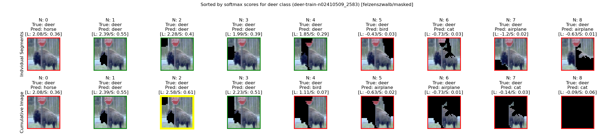 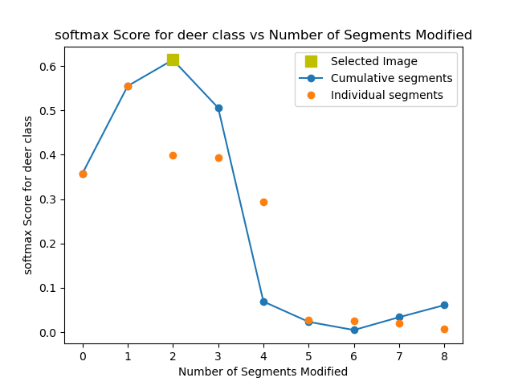 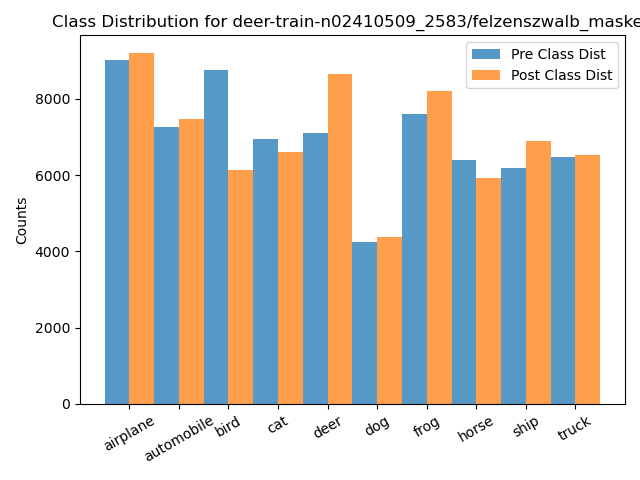ID: deer-train-n02439033_6955/felzenszwalb_masked_softmax
Accuracy: 0.687 -> 0.685
Mean Recall: 0.687 -> 0.685
Mean Precision: 0.692 -> 0.691
Mean F1: 0.684 -> 0.68
Target Recall: 0.61 -> 0.675
Target Precision: 0.6 -> 0.508
Target F1: 0.605 -> 0.58
Orig Pred Recall: 0.549 -> 0.462
Orig Pred Precision: 0.553 -> 0.633
Orig Pred F1: 0.551 -> 0.534
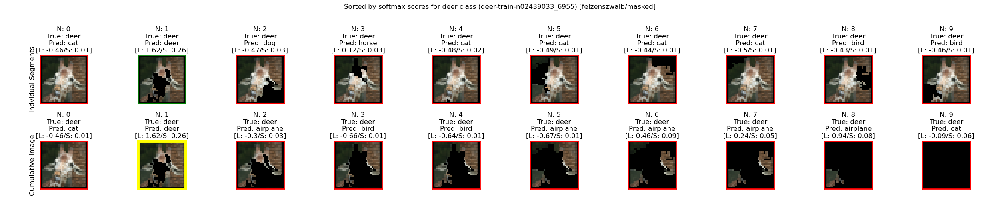 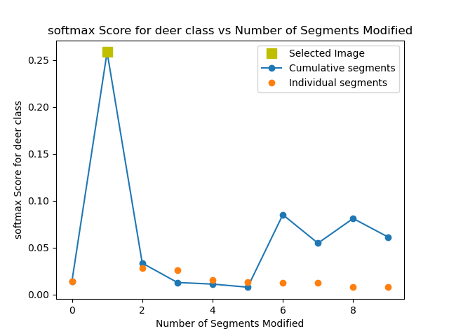 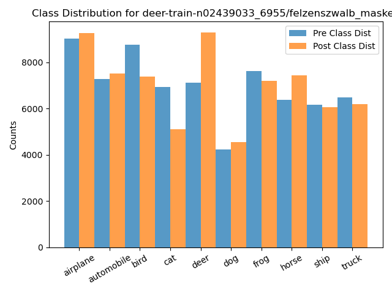ID: deer-train-n02419796_5196/felzenszwalb_gaussian_softmax
Accuracy: 0.687 -> 0.684
Mean Recall: 0.687 -> 0.684
Mean Precision: 0.692 -> 0.695
Mean F1: 0.684 -> 0.681
Target Recall: 0.61 -> 0.689
Target Precision: 0.6 -> 0.518
Target F1: 0.605 -> 0.591
Orig Pred Recall: 0.743 -> 0.595
Orig Pred Precision: 0.594 -> 0.772
Orig Pred F1: 0.66 -> 0.672
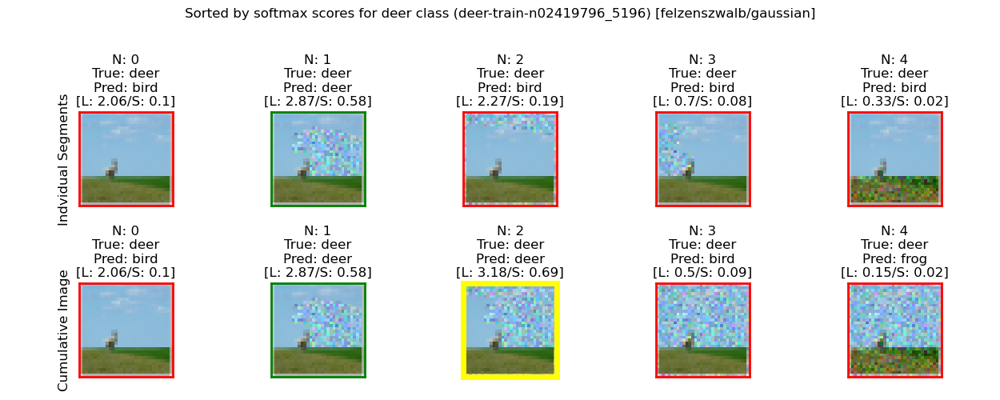 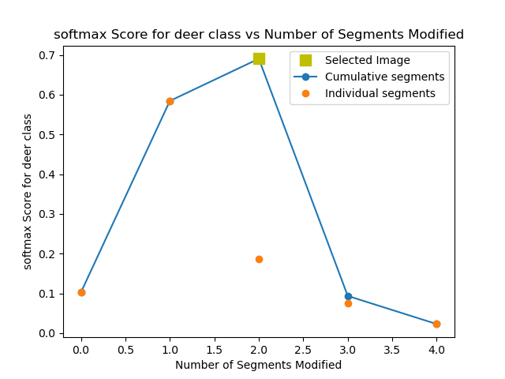 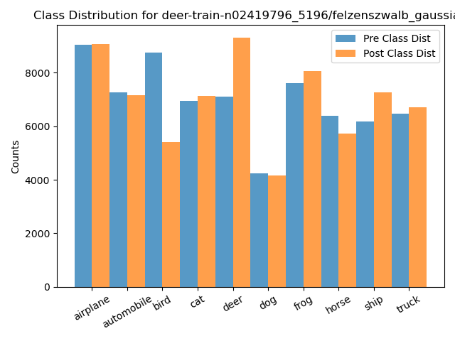ID: deer-train-n02401031_2420/felzenszwalb_masked_softmax
Accuracy: 0.687 -> 0.684
Mean Recall: 0.687 -> 0.684
Mean Precision: 0.692 -> 0.699
Mean F1: 0.684 -> 0.681
Target Recall: 0.61 -> 0.708
Target Precision: 0.6 -> 0.494
Target F1: 0.605 -> 0.582
Orig Pred Recall: 0.743 -> 0.627
Orig Pred Precision: 0.594 -> 0.741
Orig Pred F1: 0.66 -> 0.679
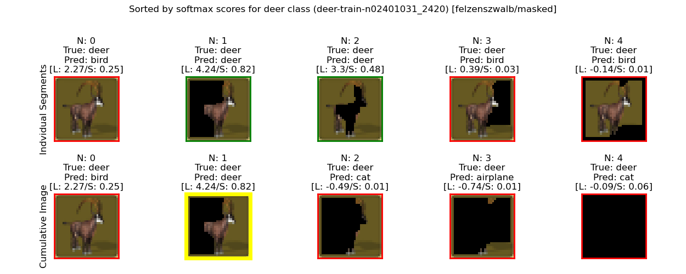 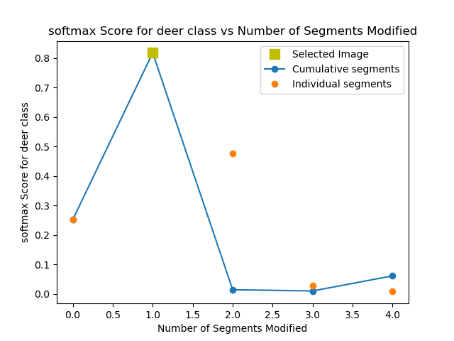ID: deer-train-n02407959_17058/felzenszwalb_masked_softmax
Accuracy: 0.687 -> 0.683
Mean Recall: 0.687 -> 0.683
Mean Precision: 0.692 -> 0.691
Mean F1: 0.684 -> 0.678
Target Recall: 0.61 -> 0.665
Target Precision: 0.6 -> 0.528
Target F1: 0.605 -> 0.589
Orig Pred Recall: 0.549 -> 0.418
Orig Pred Precision: 0.553 -> 0.668
Orig Pred F1: 0.551 -> 0.514
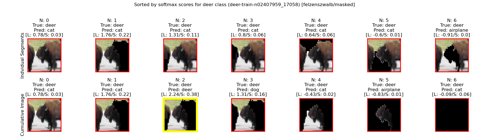 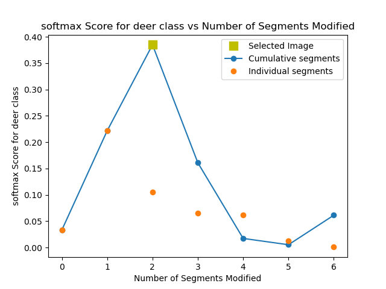 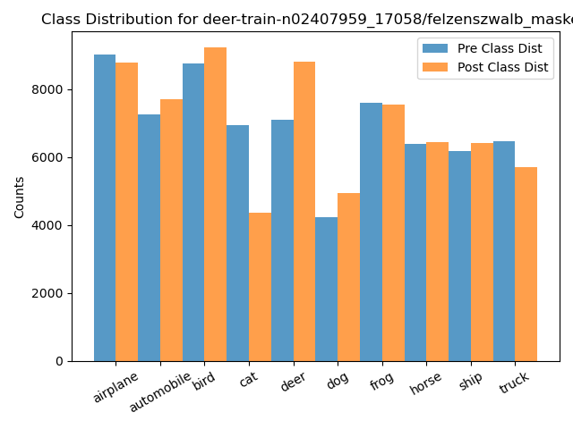ID: deer-train-n02439398_6441/felzenszwalb_gaussian_softmax
Accuracy: 0.687 -> 0.683
Mean Recall: 0.687 -> 0.683
Mean Precision: 0.692 -> 0.695
Mean F1: 0.684 -> 0.682
Target Recall: 0.61 -> 0.666
Target Precision: 0.6 -> 0.532
Target F1: 0.605 -> 0.592
Orig Pred Recall: 0.877 -> 0.78
Orig Pred Precision: 0.68 -> 0.829
Orig Pred F1: 0.766 -> 0.804
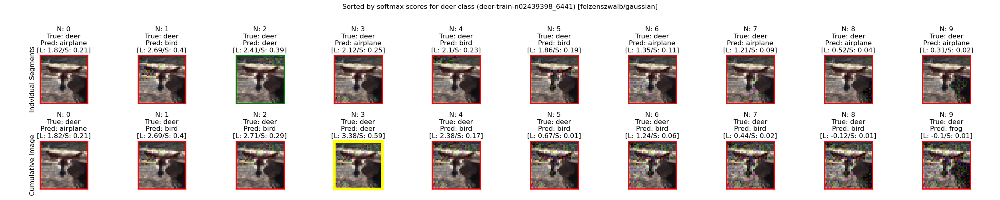 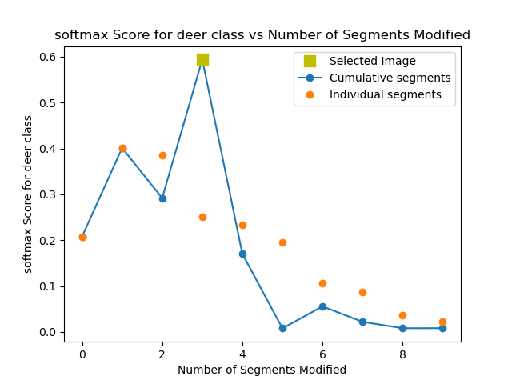 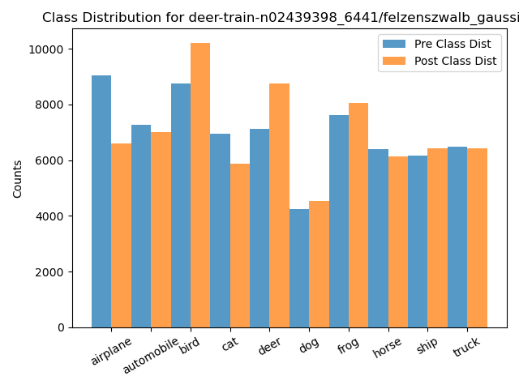ID: deer-train-n02401031_2420/felzenszwalb_gaussian_softmax
Accuracy: 0.687 -> 0.682
Mean Recall: 0.687 -> 0.682
Mean Precision: 0.692 -> 0.697
Mean F1: 0.684 -> 0.678
Target Recall: 0.61 -> 0.7
Target Precision: 0.6 -> 0.505
Target F1: 0.605 -> 0.587
Orig Pred Recall: 0.743 -> 0.663
Orig Pred Precision: 0.594 -> 0.688
Orig Pred F1: 0.66 -> 0.675
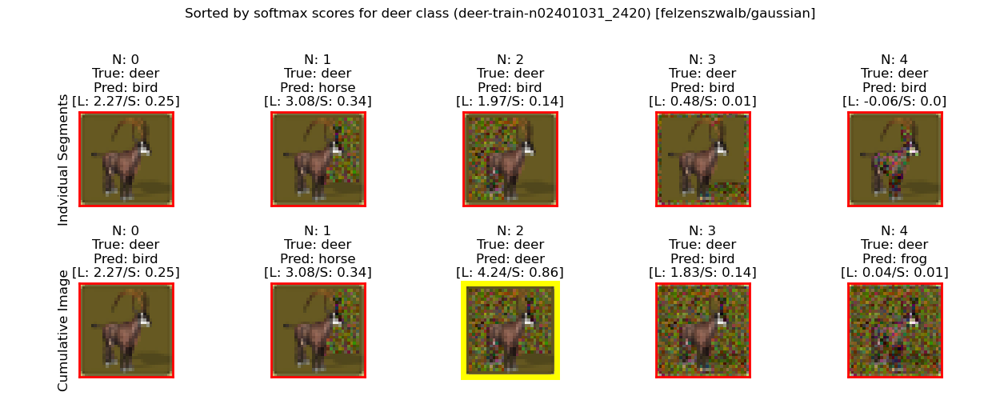 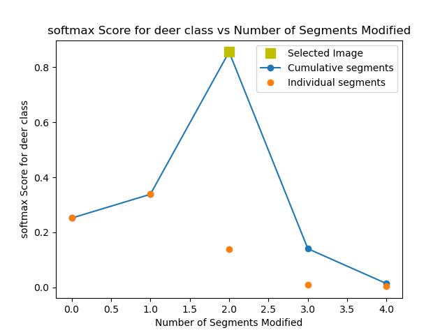 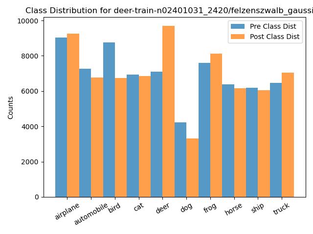ID: deer-train-n02416519_10311/felzenszwalb_masked_softmax
Accuracy: 0.687 -> 0.681
Mean Recall: 0.687 -> 0.681
Mean Precision: 0.692 -> 0.691
Mean F1: 0.684 -> 0.676
Target Recall: 0.61 -> 0.662
Target Precision: 0.6 -> 0.528
Target F1: 0.605 -> 0.588
Orig Pred Recall: 0.549 -> 0.444
Orig Pred Precision: 0.553 -> 0.641
Orig Pred F1: 0.551 -> 0.525
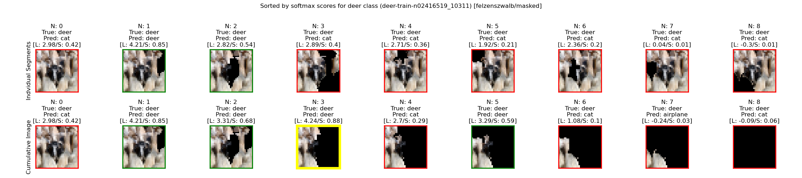 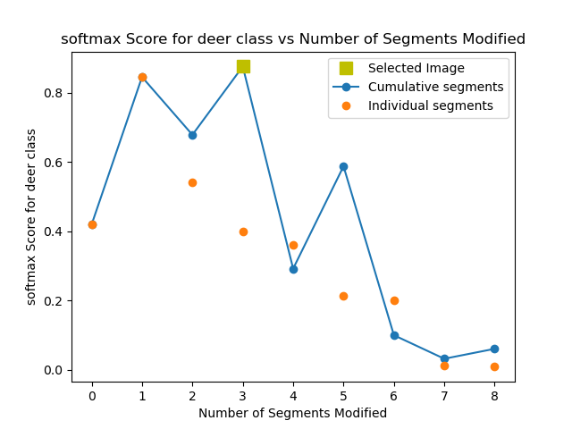 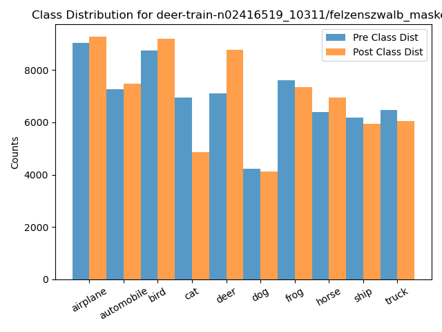ID: deer-train-n02416519_10311/felzenszwalb_gaussian_softmax
Accuracy: 0.687 -> 0.681
Mean Recall: 0.687 -> 0.681
Mean Precision: 0.692 -> 0.69
Mean F1: 0.684 -> 0.676
Target Recall: 0.61 -> 0.662
Target Precision: 0.6 -> 0.539
Target F1: 0.605 -> 0.595
Orig Pred Recall: 0.549 -> 0.459
Orig Pred Precision: 0.553 -> 0.61
Orig Pred F1: 0.551 -> 0.524
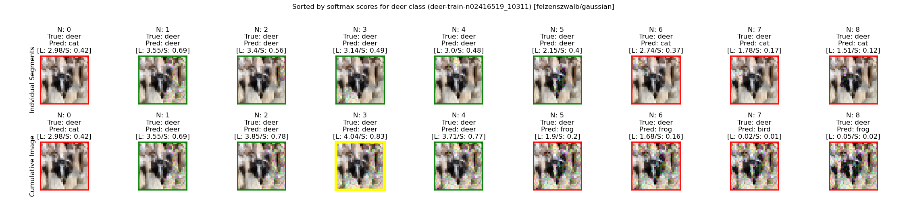 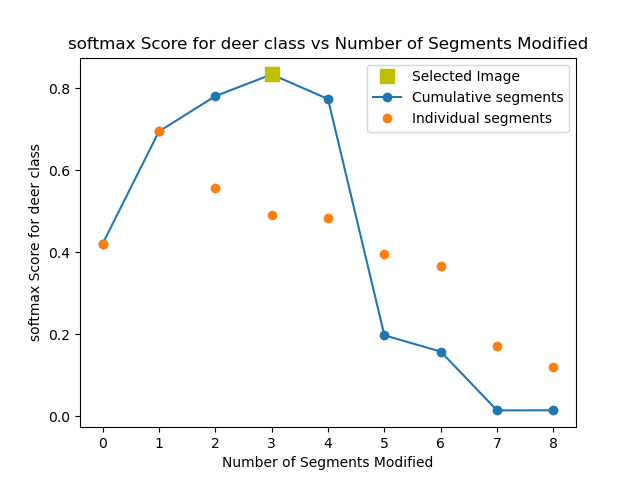
ID: deer-train-n02399000_1544/felzenszwalb_gaussian_softmax
Accuracy: 0.687 -> 0.679
Mean Recall: 0.687 -> 0.679
Mean Precision: 0.692 -> 0.69
Mean F1: 0.684 -> 0.675
Target Recall: 0.61 -> 0.643
Target Precision: 0.6 -> 0.544
Target F1: 0.605 -> 0.589
Orig Pred Recall: 0.688 -> 0.581
Orig Pred Precision: 0.78 -> 0.864
Orig Pred F1: 0.731 -> 0.695
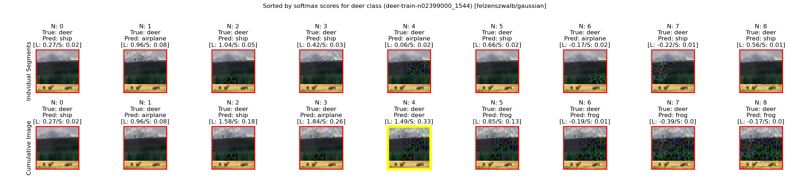 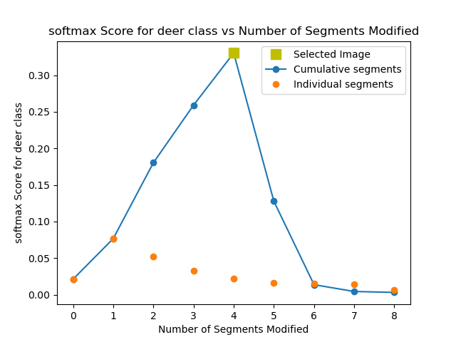 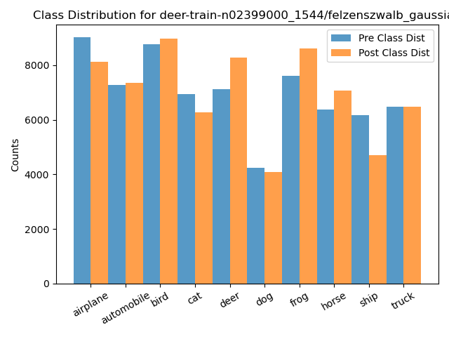ID: deer-train-n02410509_1125/felzenszwalb_gaussian_softmax
Accuracy: 0.687 -> 0.679
Mean Recall: 0.687 -> 0.679
Mean Precision: 0.692 -> 0.698
Mean F1: 0.684 -> 0.679
Target Recall: 0.61 -> 0.699
Target Precision: 0.6 -> 0.483
Target F1: 0.605 -> 0.572
Orig Pred Recall: 0.877 -> 0.783
Orig Pred Precision: 0.68 -> 0.82
Orig Pred F1: 0.766 -> 0.801
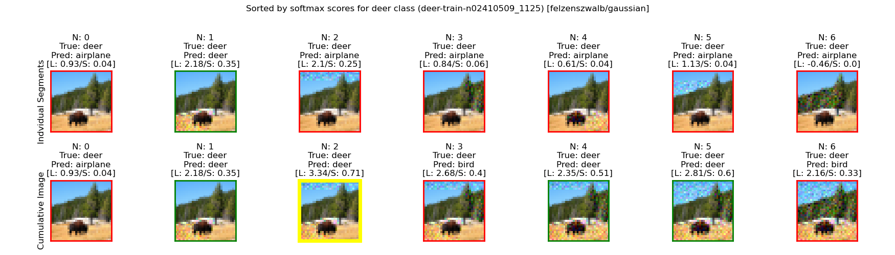 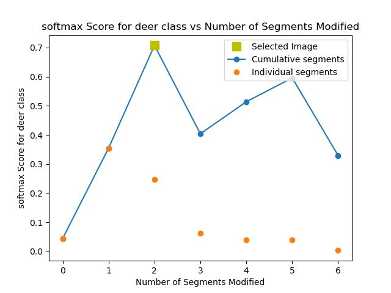 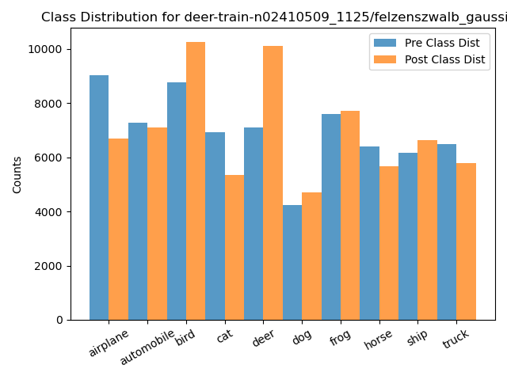ID: deer-train-n02432291_24374/felzenszwalb_masked_softmax
Accuracy: 0.687 -> 0.678
Mean Recall: 0.687 -> 0.678
Mean Precision: 0.692 -> 0.704
Mean F1: 0.684 -> 0.679
Target Recall: 0.61 -> 0.746
Target Precision: 0.6 -> 0.43
Target F1: 0.605 -> 0.546
Orig Pred Recall: 0.743 -> 0.552
Orig Pred Precision: 0.594 -> 0.825
Orig Pred F1: 0.66 -> 0.662
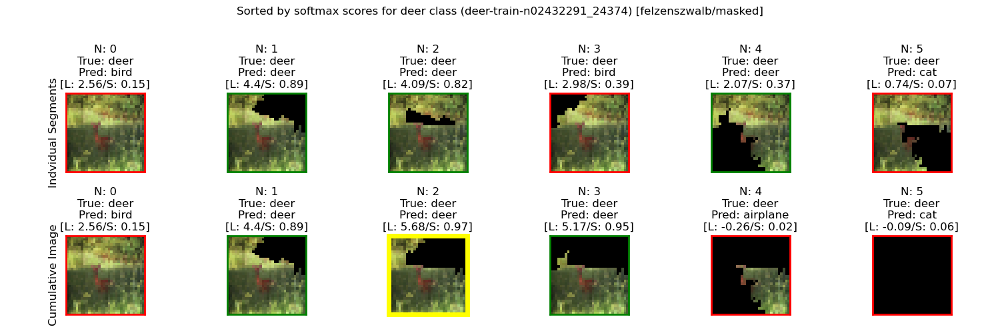 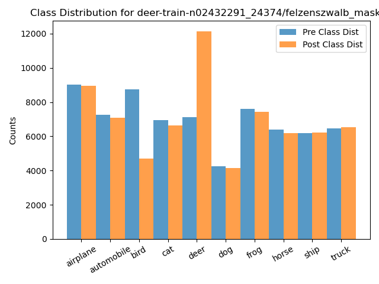
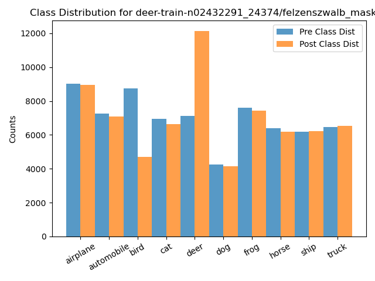
ID: deer-train-n02407959_4238/felzenszwalb_gaussian_softmax
Accuracy: 0.687 -> 0.678
Mean Recall: 0.687 -> 0.678
Mean Precision: 0.692 -> 0.706
Mean F1: 0.684 -> 0.677
Target Recall: 0.61 -> 0.746
Target Precision: 0.6 -> 0.44
Target F1: 0.605 -> 0.553
Orig Pred Recall: 0.808 -> 0.795
Orig Pred Precision: 0.744 -> 0.777
Orig Pred F1: 0.775 -> 0.786
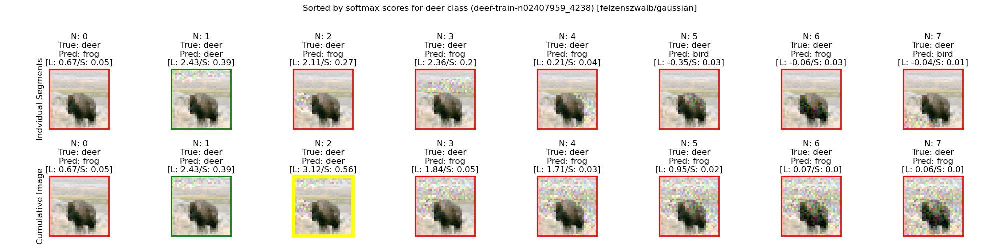 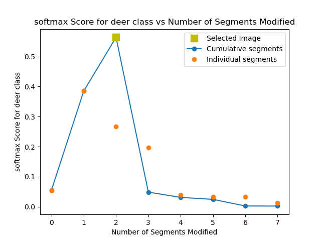 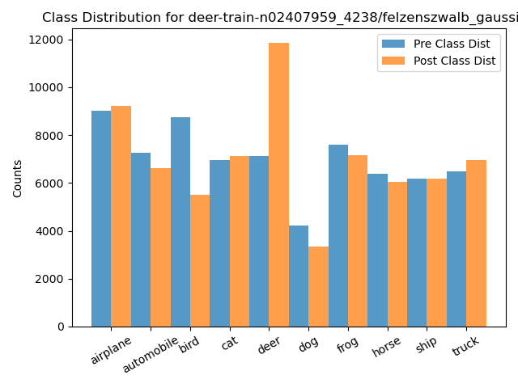ID: deer-train-n02431122_8177/felzenszwalb_gaussian_softmax
Accuracy: 0.687 -> 0.677
Mean Recall: 0.687 -> 0.677
Mean Precision: 0.692 -> 0.695
Mean F1: 0.684 -> 0.675
Target Recall: 0.61 -> 0.704
Target Precision: 0.6 -> 0.485
Target F1: 0.605 -> 0.575
Orig Pred Recall: 0.734 -> 0.603
Orig Pred Precision: 0.804 -> 0.895
Orig Pred F1: 0.767 -> 0.721
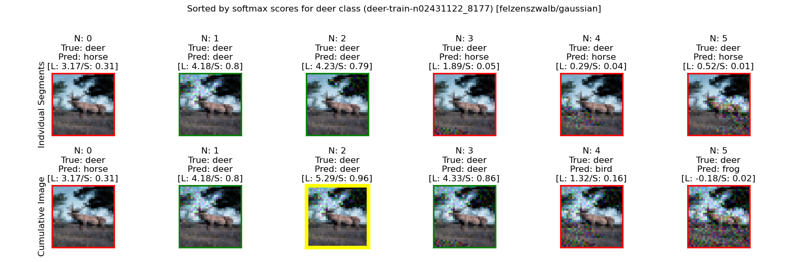 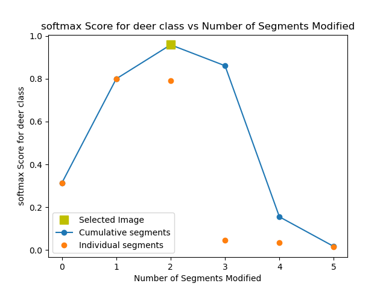 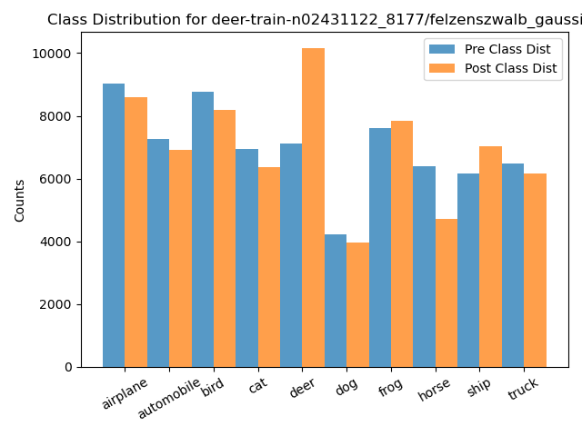ID: deer-train-n02431976_5111/felzenszwalb_masked_softmax
Accuracy: 0.687 -> 0.677
Mean Recall: 0.687 -> 0.677
Mean Precision: 0.692 -> 0.7
Mean F1: 0.684 -> 0.675
Target Recall: 0.61 -> 0.693
Target Precision: 0.6 -> 0.486
Target F1: 0.605 -> 0.572
Orig Pred Recall: 0.743 -> 0.474
Orig Pred Precision: 0.594 -> 0.883
Orig Pred F1: 0.66 -> 0.617
ID: deer-train-n02432511_7886/felzenszwalb_masked_softmax
Accuracy: 0.687 -> 0.677
Mean Recall: 0.687 -> 0.677
Mean Precision: 0.692 -> 0.702
Mean F1: 0.684 -> 0.678
Target Recall: 0.61 -> 0.593
Target Precision: 0.6 -> 0.607
Target F1: 0.605 -> 0.6
Orig Pred Recall: 0.808 -> 0.624
Orig Pred Precision: 0.744 -> 0.925
Orig Pred F1: 0.775 -> 0.745
ID: deer-train-n02410509_7854/felzenszwalb_gaussian_softmax
Accuracy: 0.687 -> 0.676
Mean Recall: 0.687 -> 0.676
Mean Precision: 0.692 -> 0.701
Mean F1: 0.684 -> 0.673
Target Recall: 0.61 -> 0.741
Target Precision: 0.6 -> 0.429
Target F1: 0.605 -> 0.544
Orig Pred Recall: 0.549 -> 0.425
Orig Pred Precision: 0.553 -> 0.65
Orig Pred F1: 0.551 -> 0.514

ID: deer-train-n02399000_928/felzenszwalb_gaussian_softmax
Accuracy: 0.687 -> 0.675
Mean Recall: 0.687 -> 0.675
Mean Precision: 0.692 -> 0.698
Mean F1: 0.684 -> 0.668
Target Recall: 0.61 -> 0.634
Target Precision: 0.6 -> 0.569
Target F1: 0.605 -> 0.6
Orig Pred Recall: 0.427 -> 0.291
Orig Pred Precision: 0.706 -> 0.862
Orig Pred F1: 0.532 -> 0.435

ID: deer-train-n02410509_1125/felzenszwalb_masked_softmax
Accuracy: 0.687 -> 0.675
Mean Recall: 0.687 -> 0.675
Mean Precision: 0.692 -> 0.698
Mean F1: 0.684 -> 0.676
Target Recall: 0.61 -> 0.668
Target Precision: 0.6 -> 0.52
Target F1: 0.605 -> 0.585
Orig Pred Recall: 0.877 -> 0.769
Orig Pred Precision: 0.68 -> 0.834
Orig Pred F1: 0.766 -> 0.8
ID: deer-train-n02430045_3803/felzenszwalb_gaussian_softmax
Accuracy: 0.687 -> 0.674
Mean Recall: 0.687 -> 0.674
Mean Precision: 0.692 -> 0.692
Mean F1: 0.684 -> 0.67
Target Recall: 0.61 -> 0.644
Target Precision: 0.6 -> 0.529
Target F1: 0.605 -> 0.581
Orig Pred Recall: 0.688 -> 0.54
Orig Pred Precision: 0.78 -> 0.879
Orig Pred F1: 0.731 -> 0.669
ID: deer-train-n02431122_8177/felzenszwalb_masked_softmax
Accuracy: 0.687 -> 0.673
Mean Recall: 0.687 -> 0.673
Mean Precision: 0.692 -> 0.689
Mean F1: 0.684 -> 0.669
Target Recall: 0.61 -> 0.599
Target Precision: 0.6 -> 0.604
Target F1: 0.605 -> 0.602
Orig Pred Recall: 0.734 -> 0.62
Orig Pred Precision: 0.804 -> 0.893
Orig Pred F1: 0.767 -> 0.732
ID: deer-train-n02411705_4103/felzenszwalb_masked_softmax
Accuracy: 0.687 -> 0.673
Mean Recall: 0.687 -> 0.673
Mean Precision: 0.692 -> 0.696
Mean F1: 0.684 -> 0.67
Target Recall: 0.61 -> 0.662
Target Precision: 0.6 -> 0.501
Target F1: 0.605 -> 0.571
Orig Pred Recall: 0.549 -> 0.41
Orig Pred Precision: 0.553 -> 0.675
Orig Pred F1: 0.551 -> 0.51

ID: deer-train-n02411206_4875/felzenszwalb_masked_softmax
Accuracy: 0.687 -> 0.671
Mean Recall: 0.687 -> 0.671
Mean Precision: 0.692 -> 0.698
Mean F1: 0.684 -> 0.666
Target Recall: 0.61 -> 0.665
Target Precision: 0.6 -> 0.504
Target F1: 0.605 -> 0.573
Orig Pred Recall: 0.549 -> 0.406
Orig Pred Precision: 0.553 -> 0.691
Orig Pred F1: 0.551 -> 0.511
ID: deer-train-n02419796_3693/felzenszwalb_gaussian_softmax
Accuracy: 0.687 -> 0.67
Mean Recall: 0.687 -> 0.67
Mean Precision: 0.692 -> 0.706
Mean F1: 0.684 -> 0.668
Target Recall: 0.61 -> 0.755
Target Precision: 0.6 -> 0.426
Target F1: 0.605 -> 0.545
Orig Pred Recall: 0.743 -> 0.516
Orig Pred Precision: 0.594 -> 0.861
Orig Pred F1: 0.66 -> 0.645
ID: deer-train-n02399000_3441/felzenszwalb_gaussian_softmax
Accuracy: 0.687 -> 0.668
Mean Recall: 0.687 -> 0.668
Mean Precision: 0.692 -> 0.711
Mean F1: 0.684 -> 0.666
Target Recall: 0.61 -> 0.775
Target Precision: 0.6 -> 0.396
Target F1: 0.605 -> 0.524
Orig Pred Recall: 0.743 -> 0.647
Orig Pred Precision: 0.594 -> 0.721
Orig Pred F1: 0.66 -> 0.682
ID: deer-train-n02407959_4205/felzenszwalb_masked_softmax
Accuracy: 0.687 -> 0.666
Mean Recall: 0.687 -> 0.666
Mean Precision: 0.692 -> 0.694
Mean F1: 0.684 -> 0.663
Target Recall: 0.61 -> 0.693
Target Precision: 0.6 -> 0.46
Target F1: 0.605 -> 0.553
Orig Pred Recall: 0.734 -> 0.485
Orig Pred Precision: 0.804 -> 0.944
Orig Pred F1: 0.767 -> 0.641

ID: deer-train-n02399000_811/felzenszwalb_masked_softmax
Accuracy: 0.687 -> 0.666
Mean Recall: 0.687 -> 0.666
Mean Precision: 0.692 -> 0.693
Mean F1: 0.684 -> 0.662
Target Recall: 0.61 -> 0.647
Target Precision: 0.6 -> 0.549
Target F1: 0.605 -> 0.594
Orig Pred Recall: 0.734 -> 0.557
Orig Pred Precision: 0.804 -> 0.922
Orig Pred F1: 0.767 -> 0.694
ID: deer-train-n02411705_958/felzenszwalb_gaussian_softmax
Accuracy: 0.687 -> 0.664
Mean Recall: 0.687 -> 0.664
Mean Precision: 0.692 -> 0.699
Mean F1: 0.684 -> 0.66
Target Recall: 0.61 -> 0.709
Target Precision: 0.6 -> 0.457
Target F1: 0.605 -> 0.555
Orig Pred Recall: 0.734 -> 0.539
Orig Pred Precision: 0.804 -> 0.935
Orig Pred F1: 0.767 -> 0.684
ID: deer-train-n02410509_11175/felzenszwalb_masked_softmax
Accuracy: 0.687 -> 0.652
Mean Recall: 0.687 -> 0.652
Mean Precision: 0.692 -> 0.703
Mean F1: 0.684 -> 0.655
Target Recall: 0.61 -> 0.754
Target Precision: 0.6 -> 0.376
Target F1: 0.605 -> 0.502
Orig Pred Recall: 0.877 -> 0.739
Orig Pred Precision: 0.68 -> 0.886
Orig Pred F1: 0.766 -> 0.806
ID: deer-train-n02411206_2871/felzenszwalb_masked_softmax
Accuracy: 0.687 -> 0.649
Mean Recall: 0.687 -> 0.649
Mean Precision: 0.692 -> 0.723
Mean F1: 0.684 -> 0.648
Target Recall: 0.61 -> 0.808
Target Precision: 0.6 -> 0.331
Target F1: 0.605 -> 0.469
Orig Pred Recall: 0.743 -> 0.493
Orig Pred Precision: 0.594 -> 0.883
Orig Pred F1: 0.66 -> 0.632
ID: deer-train-n02411206_2871/felzenszwalb_gaussian_softmax
Accuracy: 0.687 -> 0.648
Mean Recall: 0.687 -> 0.648
Mean Precision: 0.692 -> 0.707
Mean F1: 0.684 -> 0.637
Target Recall: 0.61 -> 0.785
Target Precision: 0.6 -> 0.342
Target F1: 0.605 -> 0.476
Orig Pred Recall: 0.743 -> 0.658
Orig Pred Precision: 0.594 -> 0.7
Orig Pred F1: 0.66 -> 0.679
ID: deer-train-n02410509_10204/felzenszwalb_gaussian_softmax
Accuracy: 0.687 -> 0.647
Mean Recall: 0.687 -> 0.647
Mean Precision: 0.692 -> 0.72
Mean F1: 0.684 -> 0.658
Target Recall: 0.61 -> 0.809
Target Precision: 0.6 -> 0.32
Target F1: 0.605 -> 0.459
Orig Pred Recall: 0.743 -> 0.699
Orig Pred Precision: 0.594 -> 0.651
Orig Pred F1: 0.66 -> 0.674
ID: deer-train-n02411705_4103/felzenszwalb_gaussian_softmax
Accuracy: 0.687 -> 0.647
Mean Recall: 0.687 -> 0.647
Mean Precision: 0.692 -> 0.718
Mean F1: 0.684 -> 0.657
Target Recall: 0.61 -> 0.786
Target Precision: 0.6 -> 0.317
Target F1: 0.605 -> 0.452
Orig Pred Recall: 0.549 -> 0.377
Orig Pred Precision: 0.553 -> 0.683
Orig Pred F1: 0.551 -> 0.486

ID: deer-train-n02414578_3086/felzenszwalb_gaussian_softmax
Accuracy: 0.687 -> 0.645
Mean Recall: 0.687 -> 0.645
Mean Precision: 0.692 -> 0.606
Mean F1: 0.684 -> 0.617
Target Recall: 0.61 -> 0.709
Target Precision: 0.6 -> 0.396
Target F1: 0.605 -> 0.508
Orig Pred Recall: 0.427 -> 0.0
Orig Pred Precision: 0.706 -> 0.0
Orig Pred F1: 0.532 -> 0.0
ID: deer-train-n02433546_7126/felzenszwalb_masked_softmax
Accuracy: 0.687 -> 0.645
Mean Recall: 0.687 -> 0.645
Mean Precision: 0.692 -> 0.593
Mean F1: 0.684 -> 0.611
Target Recall: 0.61 -> 0.667
Target Precision: 0.6 -> 0.516
Target F1: 0.605 -> 0.582
Orig Pred Recall: 0.427 -> 0.0
Orig Pred Precision: 0.706 -> 0.0
Orig Pred F1: 0.532 -> 0.0
ID: deer-train-n02414578_1329/felzenszwalb_gaussian_softmax
Accuracy: 0.687 -> 0.64
Mean Recall: 0.687 -> 0.64
Mean Precision: 0.692 -> 0.608
Mean F1: 0.684 -> 0.613
Target Recall: 0.61 -> 0.73
Target Precision: 0.6 -> 0.381
Target F1: 0.605 -> 0.501
Orig Pred Recall: 0.427 -> 0.0
Orig Pred Precision: 0.706 -> 0.0
Orig Pred F1: 0.532 -> 0.0
ID: deer-train-n02430045_3379/felzenszwalb_masked_softmax
Accuracy: 0.687 -> 0.638
Mean Recall: 0.687 -> 0.638
Mean Precision: 0.692 -> 0.705
Mean F1: 0.684 -> 0.624
Target Recall: 0.61 -> 0.735
Target Precision: 0.6 -> 0.347
Target F1: 0.605 -> 0.471
Orig Pred Recall: 0.743 -> 0.091
Orig Pred Precision: 0.594 -> 0.994
Orig Pred F1: 0.66 -> 0.167
ID: deer-train-n02439033_11043/felzenszwalb_gaussian_softmax
Accuracy: 0.687 -> 0.638
Mean Recall: 0.687 -> 0.638
Mean Precision: 0.692 -> 0.601
Mean F1: 0.684 -> 0.608
Target Recall: 0.61 -> 0.698
Target Precision: 0.6 -> 0.414
Target F1: 0.605 -> 0.52
Orig Pred Recall: 0.427 -> 0.0
Orig Pred Precision: 0.706 -> 0.0
Orig Pred F1: 0.532 -> 0.0
ID: deer-train-n02432291_3233/felzenszwalb_gaussian_softmax
Accuracy: 0.687 -> 0.637
Mean Recall: 0.687 -> 0.637
Mean Precision: 0.692 -> 0.615
Mean F1: 0.684 -> 0.612
Target Recall: 0.61 -> 0.769
Target Precision: 0.6 -> 0.354
Target F1: 0.605 -> 0.484
Orig Pred Recall: 0.427 -> 0.0
Orig Pred Precision: 0.706 -> 0.0
Orig Pred F1: 0.532 -> 0.0
ID: deer-train-n02411206_257/felzenszwalb_masked_softmax
Accuracy: 0.687 -> 0.633
Mean Recall: 0.687 -> 0.633
Mean Precision: 0.692 -> 0.728
Mean F1: 0.684 -> 0.631
Target Recall: 0.61 -> 0.817
Target Precision: 0.6 -> 0.312
Target F1: 0.605 -> 0.452
Orig Pred Recall: 0.549 -> 0.361
Orig Pred Precision: 0.553 -> 0.727
Orig Pred F1: 0.551 -> 0.482
ID: deer-train-n02433546_7126/felzenszwalb_gaussian_softmax
Accuracy: 0.687 -> 0.624
Mean Recall: 0.687 -> 0.624
Mean Precision: 0.692 -> 0.623
Mean F1: 0.684 -> 0.603
Target Recall: 0.61 -> 0.805
Target Precision: 0.6 -> 0.321
Target F1: 0.605 -> 0.459
Orig Pred Recall: 0.427 -> 0.0
Orig Pred Precision: 0.706 -> 0.0
Orig Pred F1: 0.532 -> 0.0
ID: deer-train-n02433925_6981/felzenszwalb_masked_softmax
Accuracy: 0.687 -> 0.622
Mean Recall: 0.687 -> 0.622
Mean Precision: 0.692 -> 0.617
Mean F1: 0.684 -> 0.603
Target Recall: 0.61 -> 0.788
Target Precision: 0.6 -> 0.308
Target F1: 0.605 -> 0.443
Orig Pred Recall: 0.743 -> 0.0
Orig Pred Precision: 0.594 -> 0.0
Orig Pred F1: 0.66 -> 0.0
ID: deer-train-n02419796_3693/felzenszwalb_masked_softmax
Accuracy: 0.687 -> 0.616
Mean Recall: 0.687 -> 0.616
Mean Precision: 0.692 -> 0.623
Mean F1: 0.684 -> 0.6
Target Recall: 0.61 -> 0.815
Target Precision: 0.6 -> 0.292
Target F1: 0.605 -> 0.429
Orig Pred Recall: 0.743 -> 0.0
Orig Pred Precision: 0.594 -> 0.0
Orig Pred F1: 0.66 -> 0.0
ID: deer-train-n02432983_25310/felzenszwalb_gaussian_softmax
Accuracy: 0.687 -> 0.616
Mean Recall: 0.687 -> 0.616
Mean Precision: 0.692 -> 0.593
Mean F1: 0.684 -> 0.589
Target Recall: 0.61 -> 0.731
Target Precision: 0.6 -> 0.334
Target F1: 0.605 -> 0.459
Orig Pred Recall: 0.734 -> 0.0
Orig Pred Precision: 0.804 -> 0.0
Orig Pred F1: 0.767 -> 0.0

ID: deer-train-n02439033_15551/felzenszwalb_gaussian_softmax
Accuracy: 0.687 -> 0.611
Mean Recall: 0.687 -> 0.611
Mean Precision: 0.692 -> 0.598
Mean F1: 0.684 -> 0.586
Target Recall: 0.61 -> 0.771
Target Precision: 0.6 -> 0.318
Target F1: 0.605 -> 0.451
Orig Pred Recall: 0.734 -> 0.0
Orig Pred Precision: 0.804 -> 0.0
Orig Pred F1: 0.767 -> 0.0
ID: deer-train-n02411206_6005/felzenszwalb_masked_softmax
Accuracy: 0.687 -> 0.61
Mean Recall: 0.687 -> 0.61
Mean Precision: 0.692 -> 0.628
Mean F1: 0.684 -> 0.595
Target Recall: 0.61 -> 0.816
Target Precision: 0.6 -> 0.286
Target F1: 0.605 -> 0.423
Orig Pred Recall: 0.743 -> 0.0
Orig Pred Precision: 0.594 -> 0.0
Orig Pred F1: 0.66 -> 0.0
ID: deer-train-n02416519_921/felzenszwalb_gaussian_softmax
Accuracy: 0.687 -> 0.608
Mean Recall: 0.687 -> 0.608
Mean Precision: 0.692 -> 0.6
Mean F1: 0.684 -> 0.583
Target Recall: 0.61 -> 0.767
Target Precision: 0.6 -> 0.317
Target F1: 0.605 -> 0.449
Orig Pred Recall: 0.734 -> 0.0
Orig Pred Precision: 0.804 -> 0.0
Orig Pred F1: 0.767 -> 0.0
ID: deer-train-n02407959_4205/felzenszwalb_gaussian_softmax
Accuracy: 0.687 -> 0.606
Mean Recall: 0.687 -> 0.606
Mean Precision: 0.692 -> 0.594
Mean F1: 0.684 -> 0.58
Target Recall: 0.61 -> 0.745
Target Precision: 0.6 -> 0.329
Target F1: 0.605 -> 0.456
Orig Pred Recall: 0.734 -> 0.0
Orig Pred Precision: 0.804 -> 0.0
Orig Pred F1: 0.767 -> 0.0
ID: deer-train-n02399000_811/felzenszwalb_gaussian_softmax
Accuracy: 0.687 -> 0.606
Mean Recall: 0.687 -> 0.606
Mean Precision: 0.692 -> 0.598
Mean F1: 0.684 -> 0.58
Target Recall: 0.61 -> 0.761
Target Precision: 0.6 -> 0.322
Target F1: 0.605 -> 0.453
Orig Pred Recall: 0.734 -> 0.0
Orig Pred Precision: 0.804 -> 0.0
Orig Pred F1: 0.767 -> 0.0

ID: deer-train-n02419796_4811/felzenszwalb_gaussian_softmax
Accuracy: 0.687 -> 0.602
Mean Recall: 0.687 -> 0.602
Mean Precision: 0.692 -> 0.602
Mean F1: 0.684 -> 0.587
Target Recall: 0.61 -> 0.746
Target Precision: 0.6 -> 0.283
Target F1: 0.605 -> 0.41
Orig Pred Recall: 0.877 -> 0.0
Orig Pred Precision: 0.68 -> 0.0
Orig Pred F1: 0.766 -> 0.0
ID: deer-train-n02419796_1521/felzenszwalb_gaussian_softmax
Accuracy: 0.687 -> 0.6
Mean Recall: 0.687 -> 0.6
Mean Precision: 0.692 -> 0.601
Mean F1: 0.684 -> 0.575
Target Recall: 0.61 -> 0.774
Target Precision: 0.6 -> 0.315
Target F1: 0.605 -> 0.448
Orig Pred Recall: 0.734 -> 0.0
Orig Pred Precision: 0.804 -> 0.0
Orig Pred F1: 0.767 -> 0.0


ID: deer-train-n02411206_6640/felzenszwalb_gaussian_softmax
Accuracy: 0.687 -> 0.6
Mean Recall: 0.687 -> 0.6
Mean Precision: 0.692 -> 0.592
Mean F1: 0.684 -> 0.58
Target Recall: 0.61 -> 0.698
Target Precision: 0.6 -> 0.303
Target F1: 0.605 -> 0.422
Orig Pred Recall: 0.877 -> 0.0
Orig Pred Precision: 0.68 -> 0.0
Orig Pred F1: 0.766 -> 0.0
ID: deer-train-n02399000_4533/felzenszwalb_masked_softmax
Accuracy: 0.687 -> 0.599
Mean Recall: 0.687 -> 0.599
Mean Precision: 0.692 -> 0.611
Mean F1: 0.684 -> 0.583
Target Recall: 0.61 -> 0.731
Target Precision: 0.6 -> 0.287
Target F1: 0.605 -> 0.412
Orig Pred Recall: 0.668 -> 0.0
Orig Pred Precision: 0.722 -> 0.0
Orig Pred F1: 0.694 -> 0.0
ID: deer-train-n02411206_7462/felzenszwalb_gaussian_softmax
Accuracy: 0.687 -> 0.595
Mean Recall: 0.687 -> 0.595
Mean Precision: 0.692 -> 0.618
Mean F1: 0.684 -> 0.582
Target Recall: 0.61 -> 0.729
Target Precision: 0.6 -> 0.278
Target F1: 0.605 -> 0.402
Orig Pred Recall: 0.769 -> 0.0
Orig Pred Precision: 0.74 -> 0.0
Orig Pred F1: 0.754 -> 0.0
ID: deer-train-n02431976_13001/felzenszwalb_gaussian_softmax
Accuracy: 0.687 -> 0.594
Mean Recall: 0.687 -> 0.594
Mean Precision: 0.692 -> 0.613
Mean F1: 0.684 -> 0.574
Target Recall: 0.61 -> 0.815
Target Precision: 0.6 -> 0.298
Target F1: 0.605 -> 0.436
Orig Pred Recall: 0.734 -> 0.0
Orig Pred Precision: 0.804 -> 0.0
Orig Pred F1: 0.767 -> 0.0
ID: deer-train-n02431785_8076/felzenszwalb_gaussian_softmax
Accuracy: 0.687 -> 0.589
Mean Recall: 0.687 -> 0.589
Mean Precision: 0.692 -> 0.609
Mean F1: 0.684 -> 0.571
Target Recall: 0.61 -> 0.749
Target Precision: 0.6 -> 0.266
Target F1: 0.605 -> 0.393
Orig Pred Recall: 0.877 -> 0.0
Orig Pred Precision: 0.68 -> 0.0
Orig Pred F1: 0.766 -> 0.0
ID: deer-train-n02407959_4238/felzenszwalb_masked_softmax
Accuracy: 0.687 -> 0.585
Mean Recall: 0.687 -> 0.585
Mean Precision: 0.692 -> 0.625
Mean F1: 0.684 -> 0.575
Target Recall: 0.61 -> 0.822
Target Precision: 0.6 -> 0.253
Target F1: 0.605 -> 0.387
Orig Pred Recall: 0.808 -> 0.0
Orig Pred Precision: 0.744 -> 0.0
Orig Pred F1: 0.775 -> 0.0


ID: deer-train-n02410509_8783/felzenszwalb_gaussian_softmax
Accuracy: 0.687 -> 0.582
Mean Recall: 0.687 -> 0.582
Mean Precision: 0.692 -> 0.753
Mean F1: 0.684 -> 0.606
Target Recall: 0.61 -> 0.858
Target Precision: 0.6 -> 0.232
Target F1: 0.605 -> 0.365
Orig Pred Recall: 0.743 -> 0.339
Orig Pred Precision: 0.594 -> 0.963
Orig Pred F1: 0.66 -> 0.501
ID: deer-train-n02410509_2583/felzenszwalb_gaussian_softmax
Accuracy: 0.687 -> 0.574
Mean Recall: 0.687 -> 0.574
Mean Precision: 0.692 -> 0.64
Mean F1: 0.684 -> 0.57
Target Recall: 0.61 -> 0.878
Target Precision: 0.6 -> 0.242
Target F1: 0.605 -> 0.379
Orig Pred Recall: 0.734 -> 0.0
Orig Pred Precision: 0.804 -> 0.0
Orig Pred F1: 0.767 -> 0.0
ID: deer-train-n02402010_12215/felzenszwalb_gaussian_softmax
Accuracy: 0.687 -> 0.566
Mean Recall: 0.687 -> 0.566
Mean Precision: 0.692 -> 0.523
Mean F1: 0.684 -> 0.522
Target Recall: 0.61 -> 0.824
Target Precision: 0.6 -> 0.264
Target F1: 0.605 -> 0.4
Orig Pred Recall: 0.427 -> 0.0
Orig Pred Precision: 0.706 -> 0.0
Orig Pred F1: 0.532 -> 0.0
ID: deer-train-n02402010_6941/felzenszwalb_masked_softmax
Accuracy: 0.687 -> 0.542
Mean Recall: 0.687 -> 0.542
Mean Precision: 0.692 -> 0.504
Mean F1: 0.684 -> 0.5
Target Recall: 0.61 -> 0.762
Target Precision: 0.6 -> 0.299
Target F1: 0.605 -> 0.429
Orig Pred Recall: 0.668 -> 0.0
Orig Pred Precision: 0.722 -> 0.0
Orig Pred F1: 0.694 -> 0.0

ID: deer-train-n02411206_257/felzenszwalb_gaussian_softmax
Accuracy: 0.687 -> 0.526
Mean Recall: 0.687 -> 0.526
Mean Precision: 0.692 -> 0.602
Mean F1: 0.684 -> 0.51
Target Recall: 0.61 -> 0.94
Target Precision: 0.6 -> 0.201
Target F1: 0.605 -> 0.331
Orig Pred Recall: 0.549 -> 0.0
Orig Pred Precision: 0.553 -> 0.0
Orig Pred F1: 0.551 -> 0.0
ID: deer-train-n02432291_6604/felzenszwalb_gaussian_softmax
Accuracy: 0.687 -> 0.523
Mean Recall: 0.687 -> 0.523
Mean Precision: 0.692 -> 0.522
Mean F1: 0.684 -> 0.496
Target Recall: 0.61 -> 0.829
Target Precision: 0.6 -> 0.217
Target F1: 0.605 -> 0.344
Orig Pred Recall: 0.877 -> 0.0
Orig Pred Precision: 0.68 -> 0.0
Orig Pred F1: 0.766 -> 0.0
ID: deer-train-n02429456_1643/felzenszwalb_masked_softmax
Accuracy: 0.687 -> 0.516
Mean Recall: 0.687 -> 0.516
Mean Precision: 0.692 -> 0.632
Mean F1: 0.684 -> 0.484
Target Recall: 0.61 -> 0.808
Target Precision: 0.6 -> 0.258
Target F1: 0.605 -> 0.391
Orig Pred Recall: 0.743 -> 0.0
Orig Pred Precision: 0.594 -> 0.0
Orig Pred F1: 0.66 -> 0.0
ID: deer-train-n02411206_6005/felzenszwalb_gaussian_softmax
Accuracy: 0.687 -> 0.479
Mean Recall: 0.687 -> 0.479
Mean Precision: 0.692 -> 0.691
Mean F1: 0.684 -> 0.48
Target Recall: 0.61 -> 0.928
Target Precision: 0.6 -> 0.178
Target F1: 0.605 -> 0.299
Orig Pred Recall: 0.743 -> 0.009
Orig Pred Precision: 0.594 -> 1.0
Orig Pred F1: 0.66 -> 0.017

ID: deer-train-n02410509_11175/felzenszwalb_gaussian_softmax
Accuracy: 0.687 -> 0.443
Mean Recall: 0.687 -> 0.443
Mean Precision: 0.692 -> 0.561
Mean F1: 0.684 -> 0.424
Target Recall: 0.61 -> 0.838
Target Precision: 0.6 -> 0.164
Target F1: 0.605 -> 0.275
Orig Pred Recall: 0.877 -> 0.0
Orig Pred Precision: 0.68 -> 0.0
Orig Pred F1: 0.766 -> 0.0
ID: deer-train-n02439398_3481/felzenszwalb_gaussian_softmax
Accuracy: 0.687 -> 0.433
Mean Recall: 0.687 -> 0.433
Mean Precision: 0.692 -> 0.457
Mean F1: 0.684 -> 0.38
Target Recall: 0.61 -> 0.838
Target Precision: 0.6 -> 0.184
Target F1: 0.605 -> 0.302
Orig Pred Recall: 0.427 -> 0.0
Orig Pred Precision: 0.706 -> 0.0
Orig Pred F1: 0.532 -> 0.0

ID: deer-train-n02410509_10204/felzenszwalb_masked_softmax
Accuracy: 0.687 -> 0.337
Mean Recall: 0.687 -> 0.337
Mean Precision: 0.692 -> 0.549
Mean F1: 0.684 -> 0.33
Target Recall: 0.61 -> 0.977
Target Precision: 0.6 -> 0.135
Target F1: 0.605 -> 0.237
Orig Pred Recall: 0.743 -> 0.0
Orig Pred Precision: 0.594 -> 0.0
Orig Pred F1: 0.66 -> 0.0